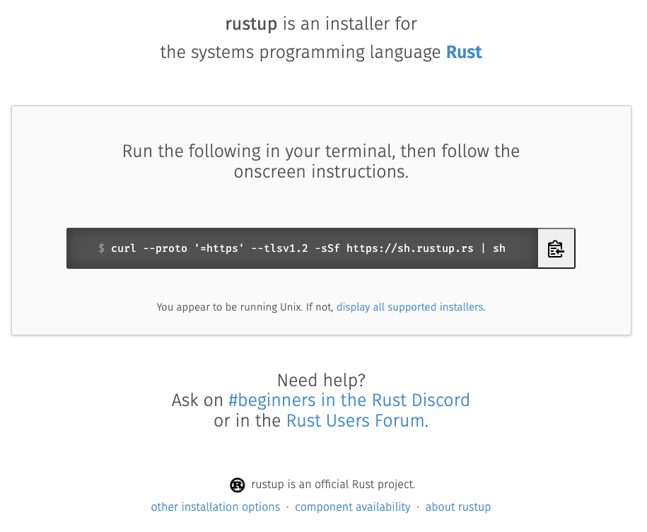
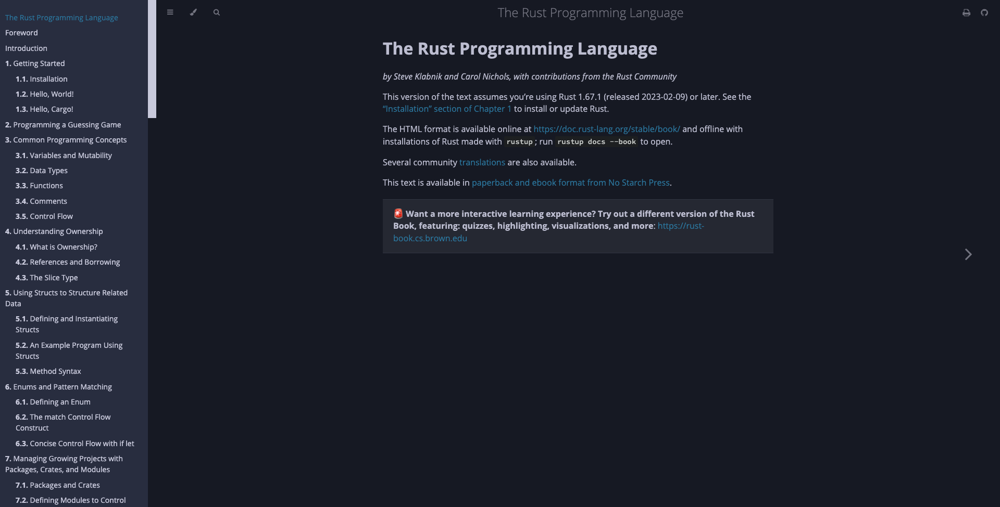

Intro to Rust (WIP)
Daniel Mason
Before We Start
- Not trying to evangelise
- Just show something cool
- Presentation will build as it goes
- Please ask questions as we go

What is Rust
Systems Programming Language
- Systems programming
- Web Servers and Web Assembly
- Embedded and IoT
- AI and ML
- Anything!
What makes it stand out?
- Fast! Really, really fast
- Memory Safe without GC
- Reliable
- Productive Tooling
A Quick look
Hello World
$ cargo new hello
Created binary (application) `hello` package
$ cd hello
$ vi src/main.rs
fn main() {
println!("Hello, world!");
}
$ cargo run
Compiling hello v0.1.0 (/Users/Daniel.Mason/projects/hello)
Finished dev [unoptimized + debuginfo] target(s) in 0.95s
Running `target/debug/hello`
Hello, world!
Strong Types
fn say_hello(to: &str) {
println!("Hello, {}!", to);
}
fn main() {
let name = "Beamery";
say_hello(name);
}
$ cargo run
Compiling hello v0.1.0 (/Users/Daniel.Mason/projects/hello)
Finished dev [unoptimized + debuginfo] target(s) in 0.32s
Running `target/debug/hello`
Hello, Beamery!
Compiler Errors
fn say_hello(to: &str) {
println!("Hello, {}!", to);
}
fn main() {
let name = 100;
say_hello(name);
}
$ cargo run
Compiling hello v0.1.0 (/Users/Daniel.Mason/projects/hello)
error[E0308]: mismatched types
--> src/main.rs:7:15
|
7 | say_hello(name);
| --------- ^^^^ expected `&str`, found integer
| |
| arguments to this function are incorrect
|
note: function defined here
--> src/main.rs:1:4
|
1 | fn say_hello(to: &str) {
| ^^^^^^^^^ --------
For more information about this error, try `rustc --explain E0308`.
error: could not compile `hello` due to previous error
Complex Types
struct Person {
name: String,
age: u8,
favorite_animal: Animal
}
enum Animal {
Cat,
OrangeCat,
}
let daniel = Person {
name: "Daniel".to_string(),
age: 40, //ish
favorite_animal: Animal::Cat,
};
Generic Types
enum Option<T> {
None,
Some(T),
}
enum Result<T, E> {
Ok(T),
Err(E),
}

I heard Rust is hard
Yeah... kinda
- Harder to start
- Spiky learning curve
- Less "weirdness" than other languages
The spikes on the learning curve
- Ownership, borrowing and lifetimes
- Concurrency
- Futures and Async / Await
- But these are not insurmountable

Why won't I shut up about it
Documentation
/// Returns a string that greets someone passes as the `to` parameter
///
/// Use this function to increase politeness
pub fn say_hello(to: &str) -> String {
format!("Hello, {}!", to)
}
$ cargo doc --open
Documenting hello v0.1.0 (/Users/Daniel.Mason/projects/hello)
Finished dev [unoptimized + debuginfo] target(s) in 0.76s
Opening /Users/Daniel.Mason/projects/hello/target/doc/hello/index.html
Testing
/// Returns a string that greets someone passes as the `to` parameter
///
/// Use this function to increase politeness
pub fn say_hello(to: &str) -> String {
format!("Hello, {}!", to)
}
#[cfg(test)]
mod tests {
use super::*;
#[test]
fn test_say_hello() {
let greeting = say_hello("Beamery");
assert_eq!(greeting, "Hello, Beamery!")
}
}
$ cargo test
Compiling hello v0.1.0 (/Users/Daniel.Mason/projects/hello)
Finished test [unoptimized + debuginfo] target(s) in 0.83s
Running unittests src/lib.rs (target/debug/deps/hello-40d6e0ec3fbb5e8f)
running 1 test
test tests::test_say_hello ... ok
test result: ok. 1 passed; 0 failed; 0 ignored; 0 measured; 0 filtered out; finished in 0.00s
Doc-tests hello
running 0 tests
test result: ok. 0 passed; 0 failed; 0 ignored; 0 measured; 0 filtered out; finished in 0.00s
/// Returns a string that greets someone passes as the `to` parameter
///
/// Use this function to increase politeness
///
/// ```
/// use hello::say_hello;
///
/// let greeting = say_hello("Beamery");
///
/// assert_eq!(greeting, "Hello, Beamery!")
/// ```
pub fn say_hello(to: &str) -> String {
format!("Hello, {}!", to)
}
running 0 tests
test result: ok. 0 passed; 0 failed; 0 ignored; 0 measured; 0 filtered out; finished in 0.00s
Doc-tests hello
running 1 test
test src/lib.rs - say_hello (line 5) ... ok
test result: ok. 1 passed; 0 failed; 0 ignored; 0 measured; 0 filtered out; finished in 0.27s

Idioms
- Pattern Matching
- Error Handling
- From<T>
- Async/Await
Pattern Matching
fn meaning_of_life(are_you_sure: bool) -> Option<u32> {
if are_you_sure {
Some(42)
} else {
None
}
}
fn get_meaning() {
match meaning_of_life(true) {
Some(value) => println!("It is {}", value),
None => println!("Who knows"),
}
}
fn get_meaning() {
if let Some(value) = meaning_of_life(true) {
println!("The meaning of life is {}", value);
// ...
}
}
fn get_meaning() {
let Some(value) = meaning_of_life(true) else {
return
};
println!("The meaning of life is {}", value);
// ...
}
Error Handling
struct MyError(String);
fn may_not_work() -> Result<String, MyError> {
if thread_rng().gen_bool(0.5) {
Ok("Whoop!".to_string())
} else {
Err(MyError("Ohps".to_string()))
}
}
fn show_work() -> Result<(), MyError> {
match may_not_work() {
Ok(work) => println!("{}", work),
Err(err) => return Err(err),
}
Ok(())
}
fn do_some_work() -> Result<(), MyError> {
let work = may_not_work()?;
println!("{}", work);
Ok(())
}
From<T>
struct MySimpleError(String);
enum MyComplexError {
MySimpleError(MySimpleError),
SomeOtherErrorType(/*...*/),
YetAnotherErrorType(/*...*/),
}
impl From<MySimpleError> for MyComplexError {
fn from(simple: MySimpleError) -> Self {
MyComplexError::MySimpleError(simple)
}
}
fn simple() -> Result<String, MySimpleError> {
todo!()
}
fn complex() -> Result<usize, MyComplexError> {
let size = simple()?.len();
todo!()
}
Async/Await
async fn simple() -> Result<String, MySimpleError> {
todo!()
}
async fn complex() -> Result<usize, MyComplexError> {
let size = simple().await?.len();
todo!()
}
Community
Getting Started
Rust Up
Rust Book
Rustlings
- Grab it from https://github.com/rust-lang/rustlings/
- OR
- Get IntelliJ Community, Jetbrains Academy, Learn Rust